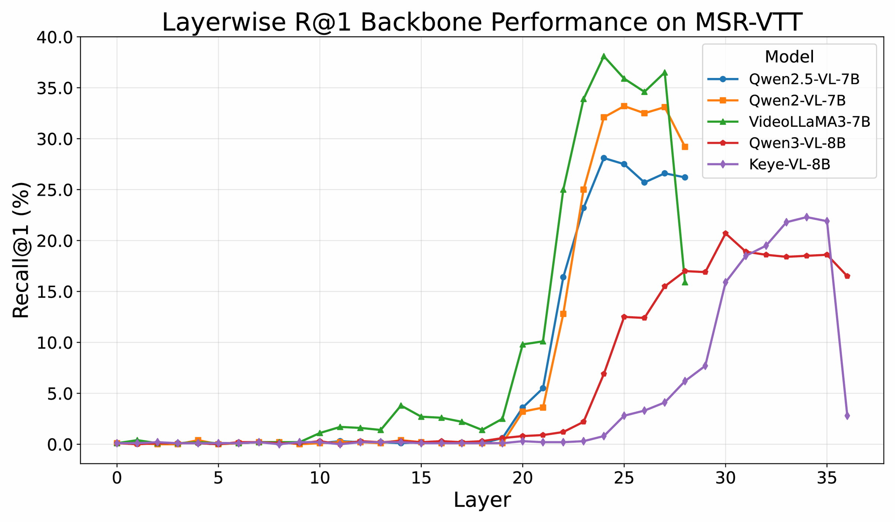
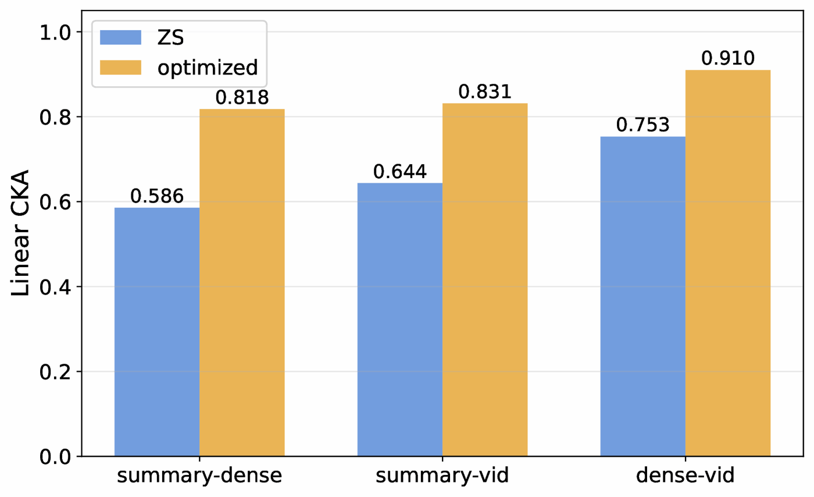
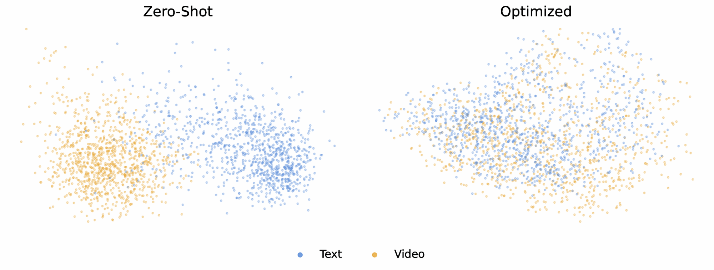

Abstract
Recent studies have adapted generative Multimodal Large Language Models (MLLMs) into embedding extractors for text–vision tasks, typically by fine-tuning them to produce universal representations. However, their performance on video–text retrieval often remains below that of dedicated Video Foundation Models. In this paper, we revisit the video–text retrieval capabilities of MLLMs. We first analyze the zero-shot retrieval capabilities of pretrained MLLMs and show that they already encode substantial retrieval-relevant information: combining intermediate-layer embeddings with a calibrated MLLM head yields strong performance without any training. To further exploit these capabilities, we introduce a lightweight text-based optimization strategy that requires no paired multimodal data. Our method uses dense video captions as rich textual surrogates for video semantics and short summaries as compact, query-like views, showing that a carefully designed text-alignment objective can improve multimodal alignment through the shared MLLM backbone. We back up these findings through in-depth analysis. Remarkably, our lightweight text-only optimization outperforms its counterpart trained with paired video–text supervision, which is substantially more computationally expensive. Furthermore, our method outperforms existing approaches, often by a substantial margin, and achieves state-of-the-art performance across common video–text retrieval benchmarks. More broadly, our findings highlight the untapped retrieval capabilities of pretrained MLLMs and establish text-only optimization as a more efficient and effective substitute for large-scale visual supervision.
Latent Retrieval Capabilities of Video MLLMs
Before any optimization, we ask how much retrieval capability a pretrained video MLLM already has. These models are trained primarily for generative video–language understanding, yet their hidden representations already contain substantial retrieval-relevant structure. To expose it without any training, we extract video and text embeddings from an intermediate layer of an off-the-shelf video MLLM (VideoLLaMA3-7B) to produce an initial ranking.
Further gains come from reranking with the calibrated MLLM head, which scores each query–candidate pair independently. For each of the top-K candidates (K = 5), the model is asked whether the video matches the sentence, and the likelihood of answering “Yes” becomes the reranking score. This two-stage pipeline requires no training whatsoever.
Despite requiring no training, VidVec-ZS surpasses all prior MLLM embedders, which are trained with contrastive objectives on vision–text pairs, on all three benchmarks. It improves Recall@1 by +2.3, +6.2, and +6.8 pp on MSR-VTT, VATEX, and DiDeMo, respectively. Intermediate-layer embeddings alone, without reranking, are already competitive and outperform several trained methods.
This training-free setting demonstrates the latent capabilities of video MLLMs and motivates our in-context text-only optimization below.
| Model | MSR-VTT | VATEX | DiDeMo |
|---|---|---|---|
| LamRA | 48.9 | 61.4 | 46.3 |
| VLM2Vec | 41.6 | 53.6 | 37.7 |
| MMRet-v1.5 | 45.2 | 57.7 | 45.1 |
| B3 | 46.7 | 57.3 | 38.7 |
| VLM2Vec-V2 | 41.0 | 52.9 | 41.7 |
| UNITE | 46.5 | 45.7 | 43.5 |
| UniME-V2 | 40.6 | 52.0 | 36.5 |
| VidVec-ZS | 51.2 | 67.6 | 53.1 |
Which layer? A note on layer selection

In the zero-shot setting, the choice of layer matters, and the final layer is not the best: it becomes increasingly tied to next-token prediction. We use layer 24 of VideoLLaMA3-7B. After optimization, we simply use the final layer.
In-Context Text-Only Optimization
To further unlock these capabilities, VidVec introduces a lightweight in-context optimization that uses only ~60K text-only pairs and no visual data. The optimization is in-context: its training pairs come from textual views of the target video context itself. The setup mirrors video–text retrieval: the dense video caption serves as a surrogate for the full video content, and the short summary acts as a compact anchor closer to retrieval queries.
Matched dense-caption–summary pairs are aligned against mismatched pairs. Text and video are encoded by the same shared MLLM backbone, while the vision encoder and projector stay frozen. Aligning two textual views of the same latent video semantics therefore also reshapes how the corresponding videos are represented, without the model ever seeing a video during training.
We fine-tune with LoRA on ~60K caption pairs from VideoUFO, a public video dataset with brief and dense captions. Training takes under 30 minutes on 4 GPUs.
Results
We evaluate VidVec against state-of-the-art MLLM embedders and Video Foundation Models (VFMs) on four common video–text retrieval benchmarks: MSR-VTT, MSVD, VATEX, and DiDeMo. The optimized embedder VidVec-O uses no reranking and consistently surpasses existing MLLM embedders in both retrieval directions, often by a substantial margin. For example, Video-to-Text Recall@1 improves by +6.5 pp on VATEX and +9.4 pp on DiDeMo.


Adding the calibrated-head reranker on top of a handful of VidVec-O candidates gives the full two-stage VidVec, which we compare with VFMs trained on tens to hundreds of millions of video–text pairs. VidVec delivers state-of-the-art performance on the majority of benchmarks in both directions, using text-only supervision.
| Method | V–T pairs | MSR-VTT | MSVD | VATEX | DiDeMo | ||||
|---|---|---|---|---|---|---|---|---|---|
| T2V | V2T | T2V | V2T | T2V | V2T | T2V | V2T | ||
| Clip4Clip | n/a | 32.0 | - | 38.5 | - | - | - | - | - |
| ViCLIP | n/a | 42.4 | 41.3 | 49.1 | 75.1 | - | - | 18.4 | 27.9 |
| InternVideo-L | 12M | 40.7 | 39.6 | 43.4 | 67.6 | 49.5 | 69.5 | 31.5 | 33.5 |
| UMT-L | 10M | 42.6 | 38.6 | 49.9 | 75.4 | - | - | 48.6 | 49.9 |
| LanguageBind | 10M | 44.8 | 40.9 | 53.9 | 72.0 | - | - | 39.9 | - |
| VideoPrism-g | 600M | 52.7 | 51.7 | - | - | 62.5 | 77.1 | - | - |
| PE-Core-G | 22M | 51.2 | 49.9 | 59.7 | 85.4 | - | - | - | - |
| InternVideo2-6B | 100M | 55.9 | 53.7 | 59.3 | 83.1 | 71.5 | 85.3 | 57.9 | 57.1 |
| VidVec | Text-only | 56.4 | 54.9 | 61.6 | 85.7 | 70.5 | 89.6 | 62.3 | 56.5 |
Generalization Across Backbones
Our method is not specific to a single backbone. We apply the same in-context text-only optimization, unchanged, to two additional video MLLMs: Keye-VL-1.5 and Qwen3-VL. Keye-VL-1.5 performs nearly on par with VideoLLaMA3 and outperforms all prior MLLM embedders on every benchmark. Qwen3-VL scores lower but remains competitive.
| Backbone | Text-to-Video R@1 | |||
|---|---|---|---|---|
| MSR-VTT | MSVD | VATEX | DiDeMo | |
| Qwen3-VL | 50.1 | 52.6 | 60.4 | 46.9 |
| Keye-VL-1.5 | 51.7 | 59.8 | 68.0 | 51.2 |
| VideoLLaMA3 | 52.5 | 60.8 | 68.2 | 53.7 |
Text-Only Optimization Outperforms Paired Video–Text Fine-Tuning
We compare our in-context text-only optimization with direct video–text fine-tuning on the corresponding VideoUFO clips, using the same training configuration. In-context text-only optimization substantially outperforms video–text training under matched compute. It also wins when video–text training uses all ~60K examples and takes about 20× longer to train. Textual supervision is not only more efficient, but can also be more effective than direct visual supervision.
| Supervision | Training regime |
# Train examples |
Training time |
MSR-VTT | DiDeMo | ||||
|---|---|---|---|---|---|---|---|---|---|
| R@1 | R@5 | R@10 | R@1 | R@5 | R@10 | ||||
| Video–text | Compute-matched | ~3.5K | <0.5 h | 43.3 | 66.6 | 75.5 | 35.8 | 60.9 | 71.8 |
| Video–text | Full data | ~60K | ~10 h | 51.8 | 73.6 | 81.9 | 51.4 | 74.8 | 81.4 |
| Text only | Ours | ~60K | <0.5 h | 52.5 | 76.3 | 83.8 | 53.7 | 79.4 | 85.0 |
Reshaping the Multimodal Embedding Space
Although our in-context optimization is defined only over text pairs, it reshapes the shared multimodal embedding space, changing both the text and the video representations. We observe three effects.
- Stronger cross-modal alignment. In the zero-shot model, dense captions are the text view best aligned with video (by CKA), which supports their use as a textual proxy for the video. After optimization, alignment rises for every pair, including short-summary–video, which corresponds to the query–video setting at retrieval time.
- A more isotropic space. Zero-shot embeddings are highly anisotropic, with an average cosine similarity between random samples of 0.84 for text and 0.86 for video. After optimization these drop to 0.26 and 0.23, and the cross-modal value falls from 0.78 to 0.21.
- A smaller modality gap. A joint PCA projection suggests that text and video embeddings, partially separated before optimization, become intermixed afterwards.


Key Contributions
- Zero-shot retriever: An effective zero-shot scheme that turns an off-the-shelf video MLLM into a competitive video–text retriever, using intermediate-layer embeddings and a calibrated MLLM head for reranking.
- In-context text-only optimization: An efficient strategy that maps dense video captions to short summaries, enabling task-related embedding learning without visual supervision.
- Outperforming paired video–text fine-tuning: Under the same setup, our text-only optimization outperforms fine-tuning on the corresponding video–text pairs, even when the latter trains ~20× longer.
- Embedding-space analysis: An empirical analysis showing that the optimization reorganizes the embedding space, improving video–text alignment, isotropy and the modality gap.
- True zero-shot evaluation: Never exposed to the benchmarks’ video domains. Neither VidVec nor its backbone was trained on their training splits, following the zero-shot protocol of InternVideo2 and VideoPrism.
- State-of-the-art results: Without any fine-tuning beyond text, VidVec achieves state-of-the-art performance on common video–text retrieval benchmarks.
BibTeX
@inproceedings{tzachor2026vidvec,
title={VidVec: Unlocking Video MLLM Embeddings for Video-Text Retrieval},
author={Tzachor, Issar and Samuel, Dvir and Ben-Ari, Rami},
booktitle={Advances in Neural Information Processing Systems (NeurIPS)},
year={2026}
}